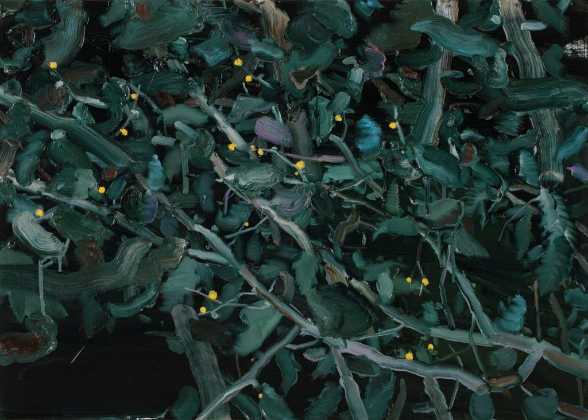
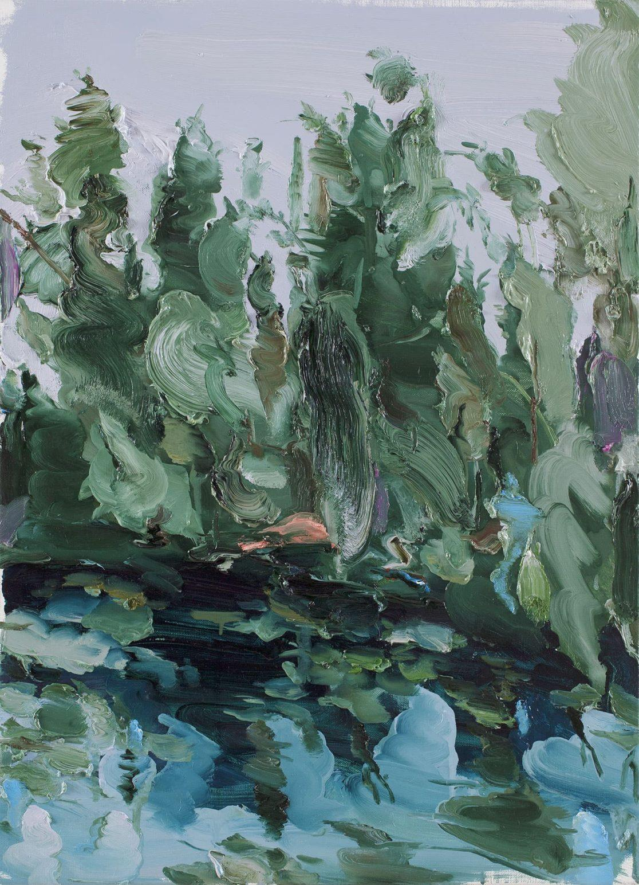
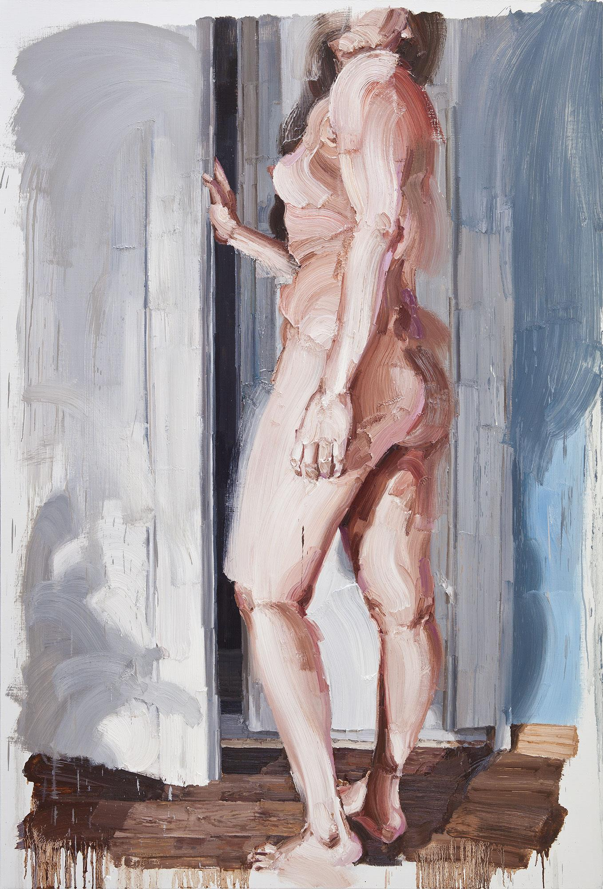
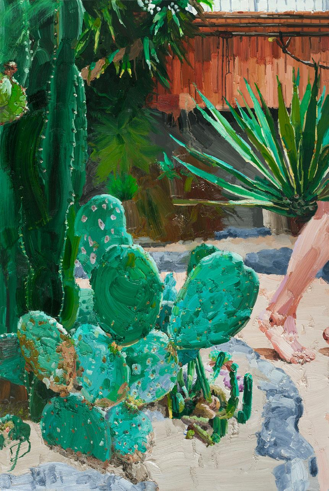

김찬성
http://www.chansongkim.com/
***garden of mistrust***
무엇을
>>식물원과 공원
작가의 말
>>새로운 것이 도착하여 기존의 것을 흐리게 하고 다시 새로운 경계를 만들어 나가는 부분이 흥미로웠다.
오래 전의 풍경을 상상해보았다. 서로 다른 대륙의 식물들이 수집되어 바로 옆에서 자라고 꽃피운다.
새로운 것들은 시간이 지나며 점점 현지에 맞는 모습으로 변한다. 부러지고 우거지고 새로 엮이고 색이 변하는 등 이방의 것은 기존 사회 속에 들어와 혼란을 만들어내며 다른 풍경을 이루어낸다.
그 과정에서 새로운 것은 기존의 것을 몰아내려 하고 정착했던 것은 낯선 것을 경계하며 긴장을 유지한다. 그리고 사라지는 것들, 떠도는 것들도 생겨난다.

-김찬성A NIGHT WALK 65 x 91 cm oil on canvas 2020

-김찬성 GARDEN OF MISTRUST 72.7 x 53cm oil on canvas 2019
***uncanny gap***
무엇을
>>자신의 몸
어떻게
>>이질적이며 불안정하다. 안정된 주체성을 확보하기 위해 그것을 위협하는 것들을 화면 속으로 추방시킨다. 그리고 그 곳으로 내몰린 덩어리들은 여전히 모호한 경계 주변에 남아있다.
방된 것들은 계속 경계를 허무는 시도를 하고 주체는 그것들을 끊임없이 거부하는 과정에서 경계가 유지되며 오히려 주체는 이 위협을 통해 더 단단한 위치를 만든다.
회화를 통해 한번 더 신체를 변형시켜 화면 안과 밖의 신체를 분리하고자 하는 시도를 한다.
그리고 회화를 통해 부분이 끊기기도 하고 왜곡되기도 하며 주체는 점점 누구의 몸인지 알 수 없는 채로 남겨진다.
왜
>>얼굴이 사라진 몸은 낯선 이방인으로 나를 응시하고 있었다. 때로는 그 신체가 그저 덩어리로 느껴지기도 했다. 그 때 그 몸은 어떤 경계 바깥에 있다고 느꼈다.
가장 가까운 존재라 믿었던 자신이 낯설게 느껴졌던 찰나의 경험은 불편한 생경함과 동시에 매혹적이었다.

-김찬성 FRONTIER 193.9 x 130.3cm oil on canvas 2015

-김찬성 FOREST OF LOSS 145.5 x 97 cm oil on canvas 2014